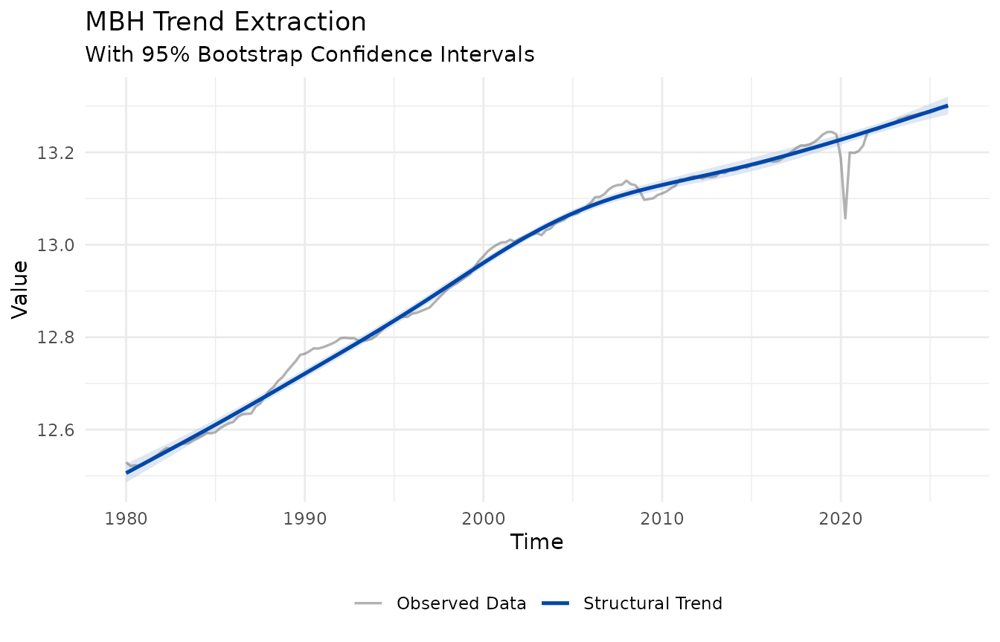
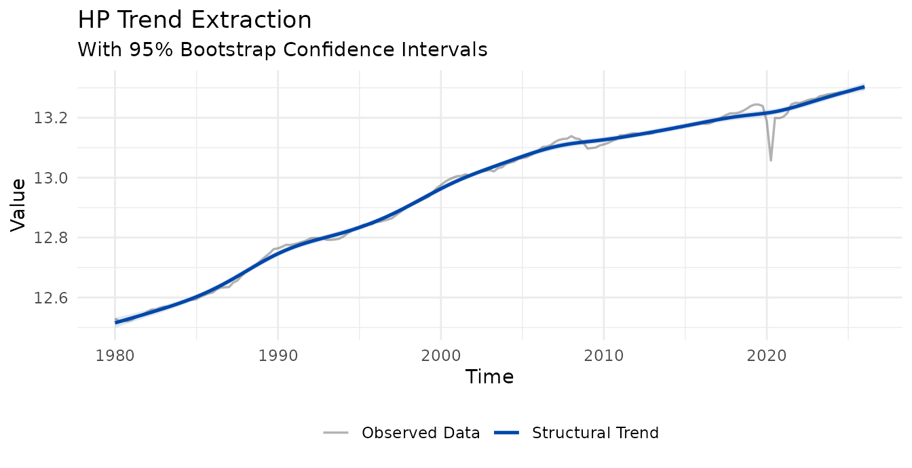
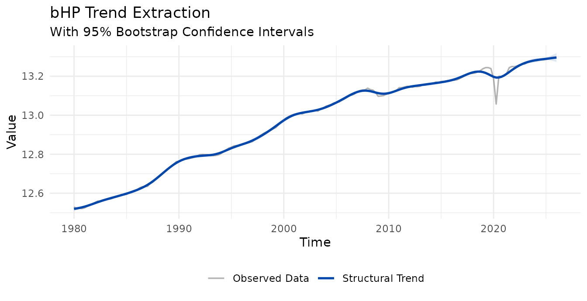
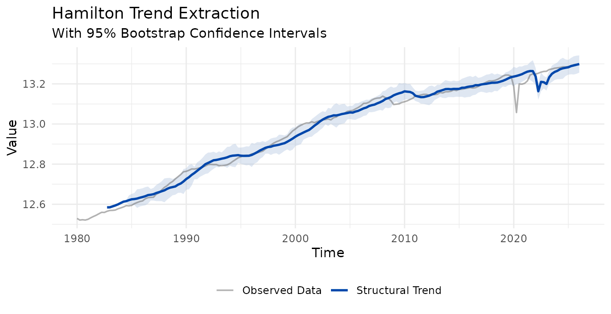
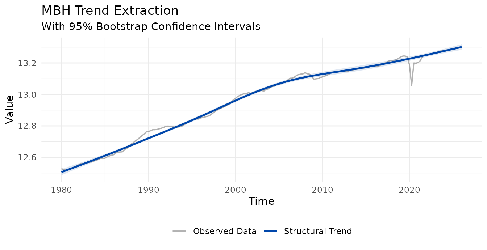

library(MacroFilters)
library(ggplot2)
data("fr_gdp", package = "MacroFilters")
# France real GDP (log level) as a quarterly ts; includes the 2020 Q2 COVID shock
d0 <- fr_gdp$date[1]
fr <- ts(
fr_gdp$gdp_log,
start = c(as.integer(format(d0, "%Y")),
(as.integer(format(d0, "%m")) - 1L) %/% 3L + 1L),
frequency = 4
)1. Why quantify trend uncertainty?
A point estimate of the trend is only half the story. In real time
the trend is most uncertain exactly where it matters most — at the
end of the sample, where the smoother has no future
observations to lean on. Every filter in MacroFilters
can attach a 95% confidence band to its trend through a single argument,
boot_iter.
fit <- mbh_filter(fr, boot_iter = 50L) # mstop defaults to 500
#> Info: Huber threshold automatically calibrated to d = 0.010139 via HP cyclical MAD.
str(fit[c("trend_lower", "trend_upper")], max.level = 1)
#> List of 2
#> $ trend_lower: num [1:185] 12.5 12.5 12.5 12.5 12.5 ...
#> $ trend_upper: num [1:185] 12.5 12.5 12.5 12.5 12.5 ...When boot_iter > 0 the returned object gains
$trend_lower and $trend_upper; otherwise they
are absent. Plotting is automatic — autoplot() draws the
ribbon whenever the bands are present:
autoplot(fit)
The trend cuts almost straight through the 2020 COVID collapse: the Huber loss treats the shock as an outlier rather than bending the trend toward it.
2. The mechanics
The engine is a Circular Block Bootstrap (Politis & Romano, 1992) of the filter’s pseudo-residuals (the cycle):
- Resample the cycle in contiguous blocks that wrap around the series end, preserving short-run autocorrelation while giving every observation equal weight (no end-point under-representation).
- Rebuild a synthetic series
trend + resampled cycleand refit the same filter to it. Each refit uses the same estimator as the base fit (samemstopfor MBH, same iteration count for bHP), so the band width is not biased. - The band is the normal approximation
trend ± 1.96 * sd(bootstrap trends), centred on the point estimate. The standard deviation is used instead of raw 2.5%/97.5% percentiles because it is smooth and stable at a practicalboot_iter(percentiles need hundreds of replicates to avoid jitter).
Two knobs control it:
-
boot_iter— number of bootstrap replicates (cost grows linearly). -
block_size— block length;"auto"(default) uses2 * frequency(two cycles), capped atlength(x) / 3to keep at least three blocks.
# Quarterly data -> auto block size = 2 * 4 = 8
fit_b <- mbh_filter(fr, boot_iter = 50L, block_size = 8L)
#> Info: Huber threshold automatically calibrated to d = 0.010139 via HP cyclical MAD.3. Bands for every filter
The same machinery is available on all four filters. Note that MBH
keeps the default mstop = 500: for long log-level series,
reducing mstop collapses the trend (the Huber gradient is
capped from the first iteration, so the trend never climbs its full
range).

autoplot(bhp_filter(fr, boot_iter = 50L))
autoplot(hamilton_filter(fr, boot_iter = 50L))
autoplot(mbh_filter(fr, boot_iter = 50L))
#> Info: Huber threshold automatically calibrated to d = 0.010139 via HP cyclical MAD.
Reading the end-point fan
For all filters the band widens toward the edges —
typically two to three times the mid-sample width. This is honest, not a
bug: estimating the trend at t = n with no future data is
genuinely far more uncertain than in the interior. It is precisely the
end-point problem these filters are designed to expose.
A note on the Hamilton band
The Hamilton filter is a regression on lags of the series, so its
first h + p - 1 observations have no fitted trend (they
appear as NA, leaving a gap at the start of the plot). Its
bootstrap is conditional on those initial observations:
the lead-in is held fixed across replicates. As a result the band is
narrow at the start of the valid window — where the predictors are the
frozen lead-in and only the regression coefficients vary — and widens
forward as the predictors themselves become resampled quantities.